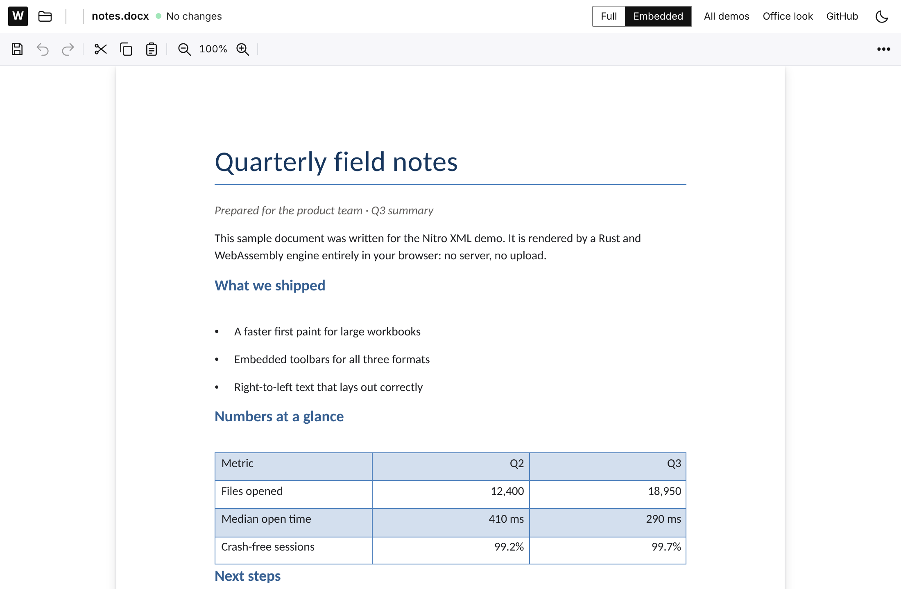
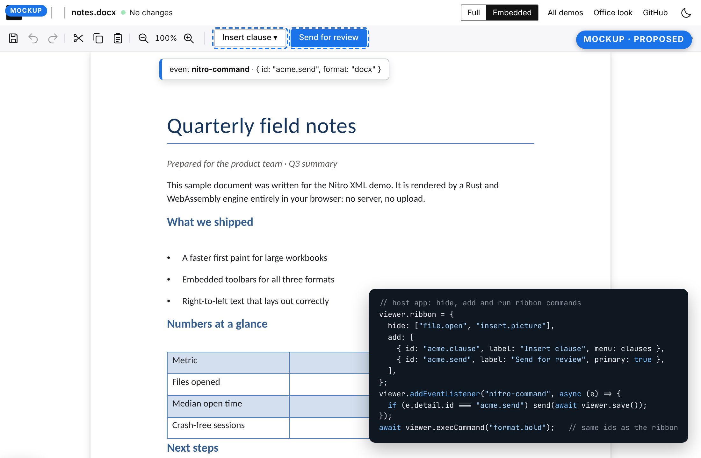
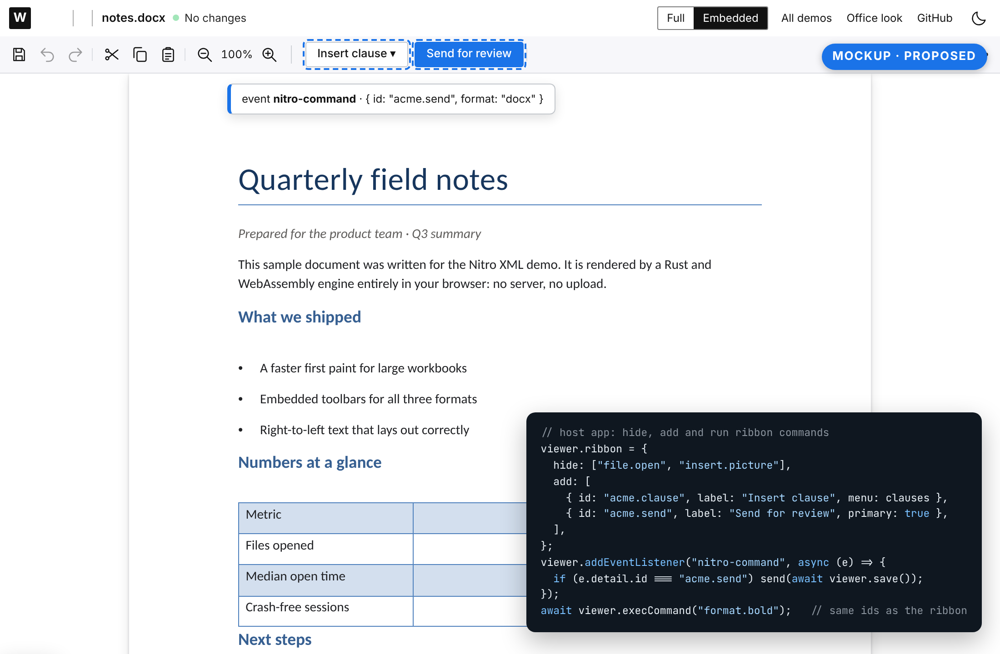

Let host apps hide, add and run ribbon commands (ribbon option, execCommand, nitro-command event)
Approved 2026-11-20 (👍). Queued behind the host-API priority work. Label applied on the 2026-11-22 catch-up run.
Approve: tap 👍 on the issue · Decline: tap 👎
Close-up of the change




Full screen

Today: an embedding app gets the full or embedded toolbar as-is. It can't hide Open or Insert Picture, can't add its own “Send for review” button, and has no public way to run a command like Bold from its own UI.


Mockup: the host hid Open and added “Insert clause” and “Send for review” to the embedded toolbar. Clicking a host button fires nitro-command; the code card shows the ribbon option and execCommand.
Tap an image to open it full size.
Why
Every host that embeds an editor wants to trim commands it doesn't support (Open, Save As, Insert Picture) and add one or two of its own (Send for review, Insert clause, Submit). OnlyOffice and Collabora both expose this through their integration APIs. Nitro already has a single command registry shared by the ribbon and shortcuts (ids like home.bold, file.open, insert.picture), so exposing it as a small, typed host API is cheap. It also fixes the stringly typed applyEdit gap in #531 for the common case.
Definition of done
- el.ribbon = { hide: [...ids], add: [{ id, label, icon?, tab?, group?, primary?, menu? }] } (and a React ribbon prop) works in full and embedded modes. Hidden ids vanish from ribbon, menus and shortcuts; added buttons appear in the named tab/group, or at the end of the embedded toolbar.
- el.execCommand(id, args?) runs any registered command with a typed id union in index.d.ts and returns false (with the valid ids in the error) for unknown ids; el.commands lists ids with label, shortcut and enabled state.
- A nitro-command event (cancelable) fires for every command, host-added or built in, with { id, format }. preventDefault() lets a host replace built-ins such as file.save or file.open.
- Readonly disables editing commands, including host ones flagged editing: true; tests cover hide, add, execCommand, cancel and readonly in all three apps.
- README host-API section documents the option, the generated command-id list and an example; bundle-budget and all required checks green.
Approve: tap 👍 on the issue · Decline: tap 👎